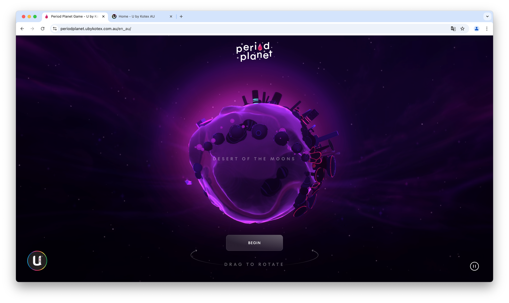
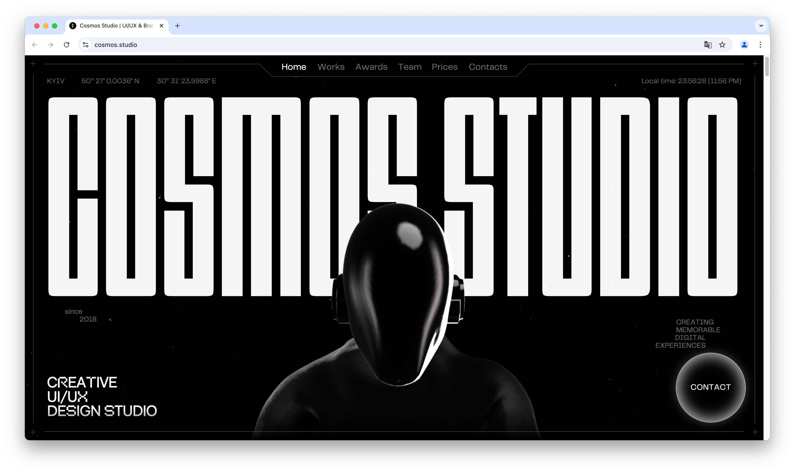
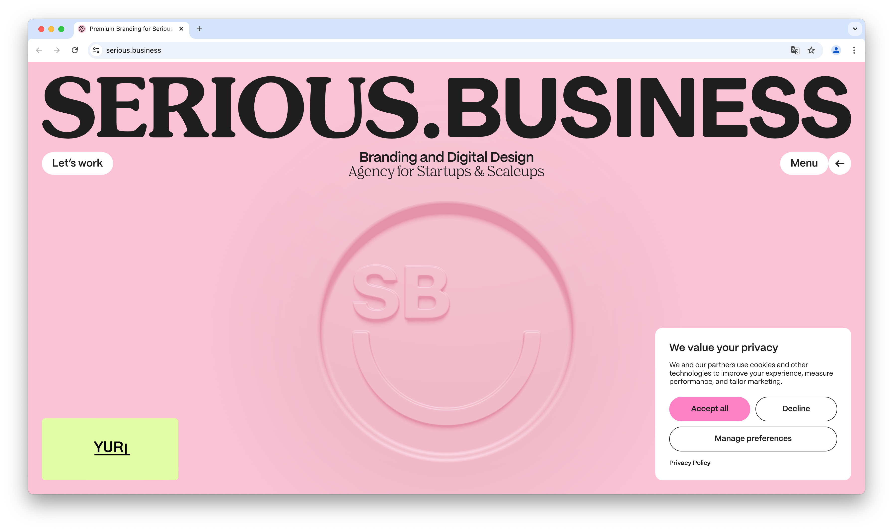

Stripe Dot Dev
Me ha gustado esta web por su estética minimalista. Las interacciones al pasar el ratón sobre la página crean una experiencia satisfactoria y divertida. También me gusta que la información que contiene es muy útil y nos enseña muchas cosas sobre programación.

Period Planet
Me gusta la función educativa que ofrece a través de un juego interactivo. En el juego vas descubriendo zonas del planeta, y te explican las distintas fases del ciclo de una persona asignada mujer al nacer (AFAB, assigned female at birth).
Cosmos Studio
Esta web te presenta los trabajos realizados por un estudio de UX/UI de una manera divertida, en estilo Dark Mode. Lo que me llamó la atención de esta página son todas las interacciones que ofrece; me gustó mucho navegar por ella, porque todas las interacciones me parecen muy interesantes.
Serious.Business
Esta web te muestra el trabajo de este estudio de una manera elegante pero divertida. Utiliza una gama de colores variada que permite al usuario identificar fácilmente los distintos apartados. Me parece que está muy bien organizada y te permite explorar todos los trabajos de forma sencilla, dándote la oportunidad de indagar más en un proyecto si te interesa.
